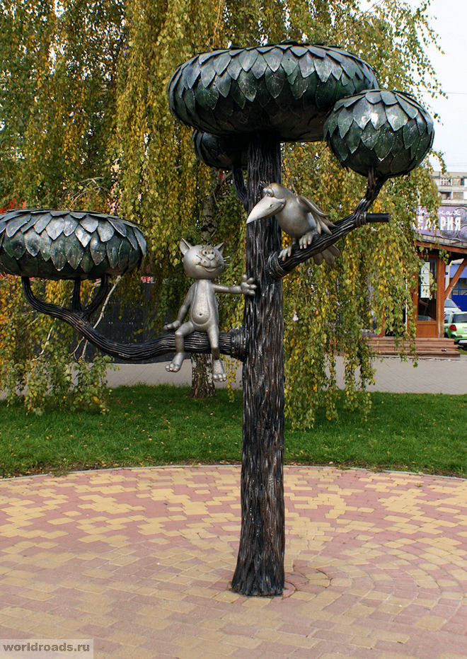
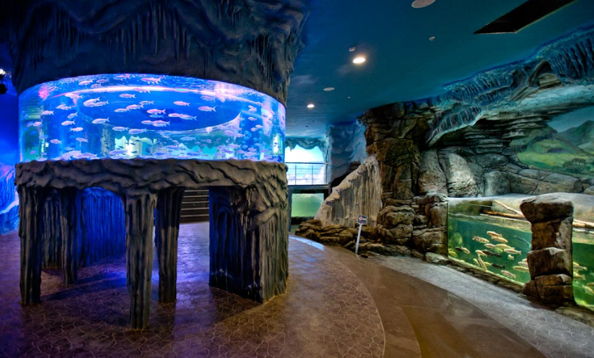
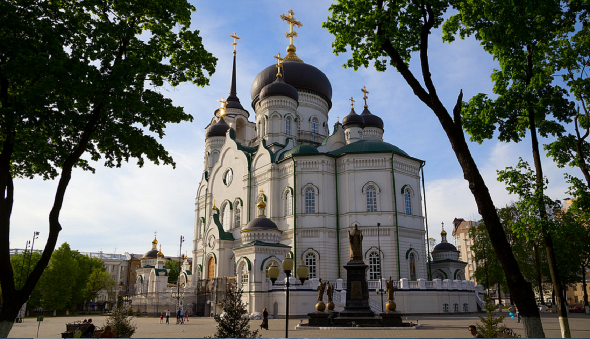
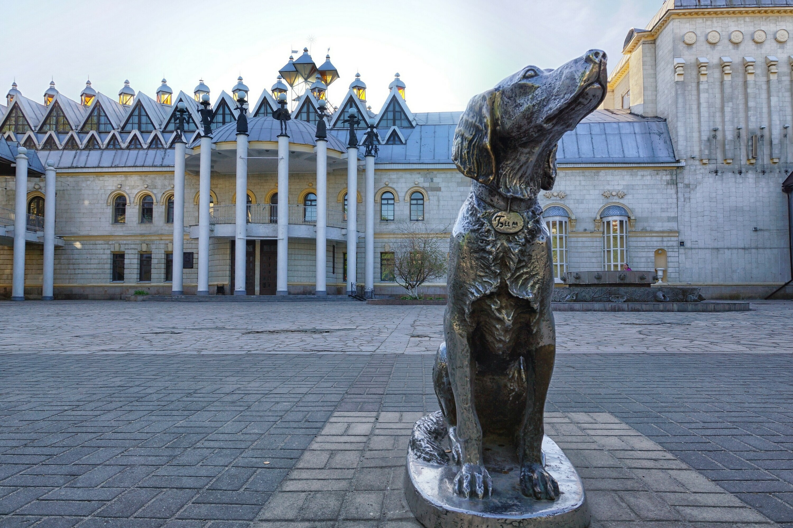
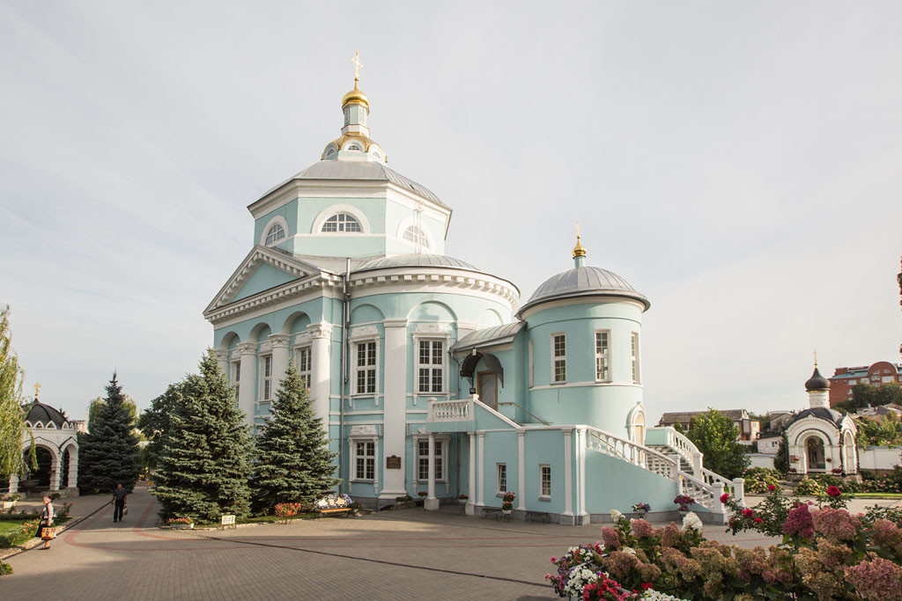
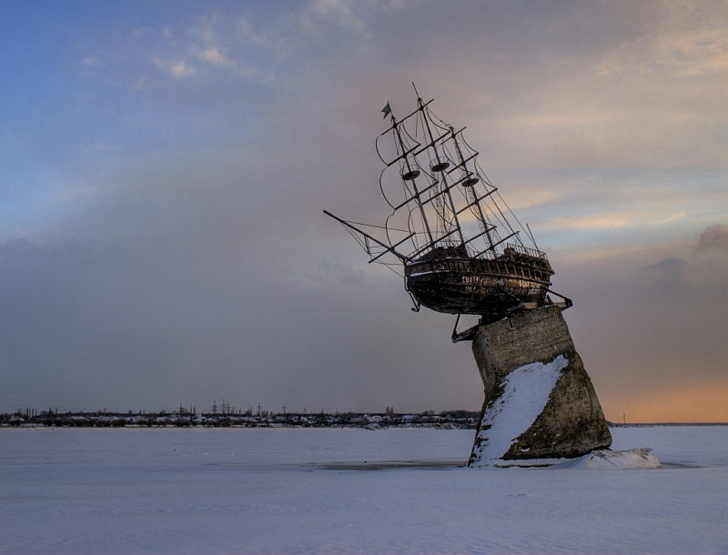
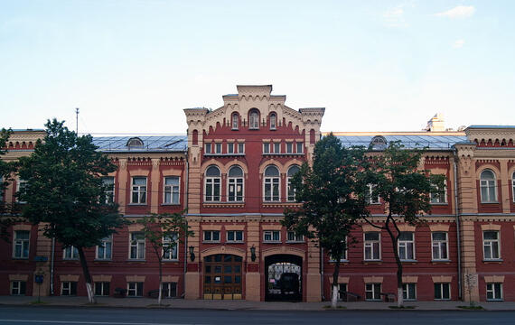

О городе Воронеж
Население: 1 032 428 человек
Основан: 1586 год
Площадь: 601 км²
Автомобильный код: 36/136
Часовой пояс: UTC+3
Климат: Умеренно-континентальный
История города Воронеж
По результатам археологических раскопок известно, что люди населяли территорию Воронежа еще со времен палеолита. На правобережье Воронежского водохранилища было найдено немало древних предметов и остатков деревянных срубов VIII-X веков.
Местные жители имели большой опыт в судостроении и судоходстве. Издавна они строили струги, на которых русское посольство плавало к турецкому султану. Для подготовки ко второму Азовскому походу в Воронеже построили корабль, около 1500 стругов, морские лодки и плоты, которые помогли захватить прежде неприступную крепость. После того, как Азов пал, Петра I создал в Воронеже отдельное адмиралтейство. На местных верфях возводили большие корабли, галеры, а также маленькие судна и парусные лодки. С 1696 по 1711 год в Воронеже было построено 215 кораблей.
В 1586 году под началом воеводы Семена Федоровича Сабурова на реке Воронеж поставили первую крепость, из которой потом и вырос город. В 1590 году на него напали черкасы. Они полностью уничтожили крепость и сожгли дома местных жителей. Однако, всего за четыре года деревянные постройки и укрепления срубили заново.
Когда в России наступили Смутные времена, воронежцы выступили против официальной власти на стороне Лжедмитрия I и Лжедмитрия II. Но, несмотря на это, они отказались присягать польскому королевичу Владиславу. В июле 1613 года мятежники потерпели поражение под Воронежем и бежали.
Для привлечения на сторону Русского государства донских казаков, по указу царя воронежцы поставляли на Дон оружие, сукно, хлеб и вино. Кроме того, служившие в городе военные сопровождали русских послов, ездивших на территорию Османской империи.
Местные жители имели большой опыт в судостроении и судоходстве. Издавна они строили струги, на которых русское посольство плавало к турецкому султану. Для подготовки ко второму Азовскому походу в Воронеже построили корабль, около 1500 стругов, морские лодки и плоты, которые помогли захватить прежде неприступную крепость. После того, как Азов пал, Петра I создал в Воронеже отдельное адмиралтейство. На местных верфях возводили большие корабли, галеры, а также маленькие судна и парусные лодки. С 1696 по 1711 год в Воронеже было построено 215 кораблей.
Видео из города Воронеж
Достопримечательности Воронежа
Памятник котенку с улицы Лизюкова
Памятник котенку с улицы Лизюкова — забавный монумент и популярная достопримечательность Воронежа, которую любят как сами жители города, так и приезжающие сюда туристы. Памятник поставлен в честь главного героя известного в СССР мультфильма «Котенок с улицы Лизюкова», который вышел в прокат 1988 году и сразу стал популярен у зрителей. Мультфильм был снят известным режиссером Вячеславом Михайловичем Котеночкиным по сценарию, написанному родившемся в Воронеже Виталием Марковичем Злотниковым.

Воронежский океанариум
Воронежский океанариум — современный развлекательный центр, который пользуется большой популярностью у жителей Воронежа и туристов. Это единственное подобное заведение на территории Черноземья и одна из главных городских достопримечательностей.

Благовещенский собор Воронежа
Благовещенский собор Воронежа – красивый православный храм города, ставший настоящим украшением его исторического центра. Благовещенский собор является одним из крупнейших российских храмов, а также одним из самых больших православных соборов мира. Во время церковных служб он способен вместить одновременно до шести тысяч человек. Высокое здание доминирует над остальной застройкой Воронежа и его видно из разных частей города.

Памятник Белому Биму
Памятник Белому Биму — монумент герою известной повести писателя Гавриила Троепольского, ставший одной из популярных достопримечательностей города Воронежа. Памятник собаке сделан в натуральную величину. Чтобы он напоминал живого Бима, памятник не стали устанавливать на высокий постамент, а поставили на маленьком округлом возвышении прямо на мостовой.

Алексеево-Акатов монастырь
Алексеево-Акатов монастырь – одна из старейших монашеских обителей Воронежского края. Первоначально монастырь был мужским, после многих лет запустения в советский период сейчас возрожден в качестве женского.

Макет корабля Меркурий
Макет корабля «Меркурий» стоит на бетонном постаменте посреди Воронежского водохранилища. «Меркурий» известен тем, что возглавлял отряд из 5 кораблей, на которых Петр I совершил свой поход в Азов. Летом рассмотреть легендарное судно можно с борта экскурсионного теплохода. А зимой, при достаточной толщине льда, к «Меркурию» легко совершить пешую прогулку. Из года в год памятник фрегату выглядит все более оригинально из-за того, что его основание, подобно Пизанской башне, клонится к воде.

Воронежский краеведческий музей
Воронежский краеведческий музей – один из старейших областных музеев России, в котором собраны богатые коллекции, знакомящие посетителей с историей, культурой, природой и сегодняшним днем Воронежского края.

Музеи Воронежа
Если есть желание больше узнать об истории города, стоит отравиться в краеведческий музей Воронежа, который расположен в доме № 29 по Плехановской улице. Музей открыли в конце XIX века в здании Городской Думы, и к 1941 году его коллекционный фонд насчитывал более 100 тысяч экспонатов. К большому сожалению, в военное время некоторые коллекции были утрачены. В 1959 году музей переехал в то здание, в котором он размещается в наши дни. Сегодня здесь можно увидеть экспонаты, рассказывающие о природе Воронежского края, находки археологов и материалы о строительстве кораблей в конце XVII – начале XVIII века.
Краеведческий музей имеет несколько филиалов, которые находятся в разных частях Воронежа. В отделе фондов (проспект Революции, 22) выставлены коллекции керамики, нумизматики, стекла и народного костюма. В здании Арсенала на улице Степана Разина, 43, можно увидеть экспозиции, посвященные истории Воронежа в годы Великой Отечественной войны. А в доме по ул. Дурова, 2, открыт филиал, посвященный знаменитому дрессировщику Анатолию Леонидовичу Дурову.
Художественный музей Воронежа носит имя известного русского живописца И. Н. Крамского. Здание, которое он занимает, часто называют «Воронежским дворцом». Роскошно украшенный барочный особняк был построен в 70-е годы XVIII века (проспект Революции, 18). В музее можно увидеть богатые коллекции живописи, графики, скульптуры, старинного фарфора и декоративно-прикладного искусства. Для посетителей двери художественного музея открыты со среды по воскресенье с 10.00 до 18.00.
Одной из любопытных достопримечательностей Воронежа считают музей забытой музыки. В нем хранится большая коллекция музыкальных инструментов, привезенных из разных уголков мира. Часть экспозиции составляют инструменты, воссозданные по чертежам и рисункам из старинных книг. Интересно, что во время экскурсии можно не только подробно рассмотреть музыкальные диковинки, но услышать, как они звучат. Музей разместился в здании Дома культуры Машиностроителей (ул. 9-го января, 108).
В городе также работают Воронежский областной литературный музей имени Никитина (ул. Плехановская, 3), музей спорта (пр-т Революции, 35), галерея современного искусства Х.Л.А.М. (ул. Депутатская, 1), народный музей Сергея Есенина (ул. К. Маркса, 112), интерактивный музей коллекционных игрушек (ул. Платонова, 3), музей театральной куклы (пр-т Революции, 50), а также интерактивный музей для Больших и Маленьких «БИМ» (пр-т Революции, 48).
Монастыри и храмы Воронежа
Алексеево-Акатов монастырь находится по адресу: ул. Освобождения труда, 1В, неподалеку от железнодорожного вокзала «Воронеж-1». Эту обитель считают самой старой на территории Черноземья. Монастырь основали в 1620 году, когда российские войска победили литовцев и черкасов. До начала XIX века это была единственная мужская обитель в городе. В 1931 году, в разгар активной антирелигиозной компании, которую проводило Советское государство, старый монастырь закрыли, а его имущество было утрачено. Несколько десятков лет архитектурные памятники простояли бесхозными и сильно разрушились.
Возрождение обители произошло в 1990-е годы. Территорию и постройки отдали церкви, и здесь был создан новый женский монастырь. Теперь монастырские здания хорошо отреставрированы. Особенно красиво они смотрятся со стороны водохранилища. Ежедневно в обители проходят службы. Однако, в монастырь пускают не только верующих, но и всех, кто интересуется русским храмовым зодчеством.
В 40 км от Воронежа, на территории Воронежского заповедника находится Толшевский Спасо-Преображенский женский монастырь. Добираются до него на автобусе № 310, который идет от Центрального автовокзала, или на электричке – до станции «Графская». Этот монастырь появился в середине XVII века. Его основателем считают отшельника Константина, жившего в местных лесах. Из-за этого первоначально обитель именовали Константиновской пустынью. Как и большинство российских монастырей, в начале 1930-х годов обитель закрыли, а в 1990-е годы вернули церкви.
На территории Первомайского сада, в центре Воронежа стоит величественный Благовещенский собор, имеющий статус кафедрального храма местной епархии. Новый собор был построен в 2009 году и получил имя утраченного в военные годы Благовещенского собора Митрофановской обители. По размерам современный храм считается одним из самых больших соборов в стране. Он поднимается на 97 м, что соответствует высоте 30-ти этажного здания. Верующие приходят в Благовещенский собор, чтобы поклониться мощам воронежского епископа Митрофания. Христианский подвижник был известен тем, что во времена Петра I освящал новые корабли российского флота. Возле собора установлен памятник епископу.
В Воронеже находится несколько старых церквей, построенных в XVIII – начале XX веков: Ильинский храм (1770 год), Введенский храм (1780 год), Покровский собор (1841 год), Успенский семинарский храм или церковь Сергия Серебрянского (1848 год), Алексеевский храм (1764 год) и Казанская церковь (1911 год).
Военные мемориалы
В центре Северного района города, на Московском проспекте, 42, расположен один из самых известных в Воронеже мемориалов, посвященных событиям Великой Отечественной войны. Летом 1942 года здесь шли ожесточенные бои, погибших солдат и офицеров хоронили в братских могилах. Памятник Славы открыли в 1967 году. Он представляет собой мемориальный комплекс с Вечным огнем и четырьмя надгробными камнями возле братских могил. Имена погибших, которые удалось установить, выбиты на мраморных плитах.
Большой мемориальный комплекс «Чижовский плацдарм» находится на улице 20-летия октября. Он был открыт в 1975 году, к 30-летию Победы. Мемориал установлен возле братской могилы, где лежит 15 тысяч погибших воинов. Захоронение считается самым крупным массовым погребением военных лет в Воронеже. Большая часть лежащих здесь солдат – безымянные герои. Известны имена только 3545 человек.
На улице Матросова можно увидеть мемориальный комплекс «Песчаный лог». В начале войны фашисты стремительно наступали и заняли правобережную часть Воронежа. В августе 1942 года произошла страшная трагедия. В Песчаном логе фашисты расстреляли 452 безоружных человека – мирных жителей, советских военнопленных и раненых солдат.
Неподалеку от стелы на Площади Победы в 2015 году открыли памятник фронтовому почтальону (пр-т Революции, 25). Интересно, что прототипом фигуры солдата с почтовой сумкой послужил реальный человек. Им стал служивший в Воронеже в годы войны ефрейтор Иван Леонтьев.
Необычные достопримечательности Воронежа
Самая старая жилая постройка Воронежа – дом, принадлежавший богатому купцу Потапу Никитичу Горденину (Фабричный пер., 12). Каменное здание появилось в городе в 1735 году, а в 1820-е годы было продано городским властям. Сейчас здесь проживает несколько семей. К сожалению, дом находится в аварийном состоянии, и его не спешат реставрировать.
В Воронеже сохранилась единственная пожарная каланча (ул. К. Маркса, 32). Она возвышается над зданием Мещанской полицейской части, построенном в начале XIX века по указу российского императора Александра I. Именно тогда в стране стали создавать профессиональные команды пожарных. В начале XIX века вокруг пожарной части располагалась деревянная застройка, поэтому на каланче велось постоянное дежурство. Башня сильно пострадала в годы Великой Отечественной войны, и после реставрации она стала вдвое ниже.
На этой же улице стоит здание, которое сами воронежцы называют «домом-гармошкой» (ул. К. Маркса, 94). Оно было построено по проекту Николая Троицкого. Центральный фасад чуть выступает вперед, и создается впечатление, что по бокам от него возвышается несколько небольших домов. На самом деле это единое здание, внешне напоминающее гармонь. Воронежская достопримечательность стала данью архитектурному стилю конструктивизм, который был очень модным в 30-е годы прошлого века.
Одна из главных магистралей Воронежа – проспект Революции. В сквере, за Домом офицеров (дом № 32) можно увидеть фонтан «Парящий камень». Он удивляет всех прохожих. Создается впечатление, что огромная глыба словно «висит» в воздухе и поддерживается исключительно за счет потока воды. Разгадка фонтана проста. Его сделали из легкого и прочного синтетического материала, а крепящая конструкция умело скрыта за водными струями.
Неподалеку, на проспекте Революции, 43, возвышается самое необычное здание Воронежа – гостиница «Бристоль». Четырехэтажный особняк приковывает внимание закругленными формами и ярким дизайном. Он появился в городе в начале прошлого века и был построен в популярном тогда стиле модерн.
На пересечении улиц Чернышевского и Карла Маркса, восточнее Кольцовского сквера, можно увидеть еще одну достопримечательность Воронежа – живописный каменный мост, декорированный кованой решеткой и красивыми фонарями. Мост совсем небольшой – не более 10 метров. Его возвели в 1826 году, и на строительство из городской казны было потрачена огромная по тем временам сумма в 5596 рублей.
Если есть желание немного передохнуть от городского шума, стоит отправиться в сосновый парк «Алые паруса», который раскинулся на берегу Воронежского водохранилища в районе Арзамасской улицы. Здесь находится необычный памятник – сделанная из металла огромная сосновая шишка. Выглядит она очень реалистично, и возле забавного монумента любят фотографироваться и взрослые, и дети.